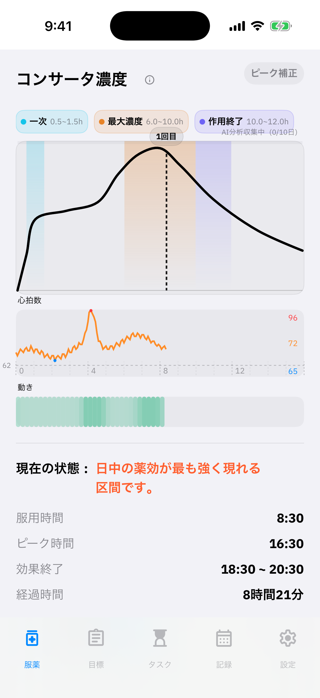
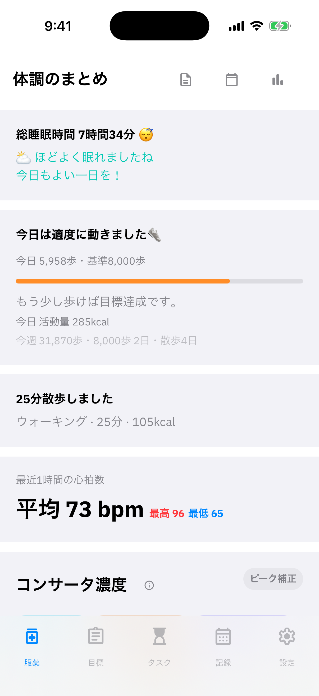

薬ごとの濃度予測グラフ
コンサータの段階的放出モデル、メディキネットの2コンパートメントモデルに基づく予測グラフを表示します。
ADHDの薬を飲んだ時刻を記録すると、薬の作用の流れを予測グラフで確認できます。
自分の記録を振り返り、毎日の予定づくりに役立てましょう。
服用時刻を入力すると、薬ごとの濃度の予測グラフを表示します。
心拍数の急な変化を検出し、記録に基づく分類を確認できます。
ホーム画面のウィジェットやDynamic Islandですぐに確認できます。

コンサータの濃度予測グラフと心拍数・動きをまとめて表示します。
コンサータとメディキネットそれぞれの薬物動態モデルを使い、時間に沿った濃度の予測グラフを表示します。
上昇中、ピーク、下降中、作用終了など、予測される現在の区間を確認できます。
予測されたピークと、自分で記録した実感上のピークを同じグラフで比較できます。
薬の作用の予測グラフと、記録された心拍数の変化を重ねて確認できます。
HealthKitから睡眠、心拍数、歩数、活動エネルギー、ワークアウトを取り込み、服薬記録と並べて表示します。
コア睡眠、深い睡眠、レム睡眠を分けて確認できます。
心拍数の急変を、薬に関連する変化・活動に関連する変化・複合的な変化として分類表示します。
毎日の歩数目標、活動量、ワークアウト記録をまとめて確認できます。

睡眠ステージ、心拍数、歩数、ワークアウト記録をひとつの画面で。
少ない入力で、一日の流れを見渡せるようにしました。
コンサータの段階的放出モデル、メディキネットの2コンパートメントモデルに基づく予測グラフを表示します。
普段より10bpm以上上昇した区間を検出し、薬・活動・複合的な変化として分類表示します。
繰り返しのルーティン、今日のタスク、目標までのカウントダウンをひとつに。
コア・深い・レム睡眠に加え、睡眠中の呼吸数の安定度も確認できます。
服薬の状態、体調、ルーティン、目標までの日数をホーム画面・ロック画面・Dynamic Islandで確認できます。
7日・30日・全期間の服用日数、総服用回数、1日平均、薬ごとの頻度をまとめて確認できます。
記録の負担を減らすため、毎日はこの3ステップで。
薬を飲んだ時刻をワンタップで記録します。
今日のタスクやルーティンをチェックしていきます。
服薬の流れと健康データをまとめて振り返ります。
服薬と毎日の体調を、一緒に記録する習慣を。
ピークリーで始めましょう。